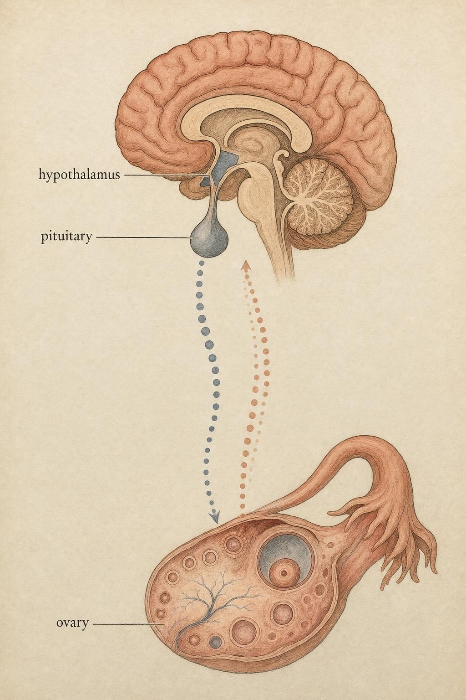
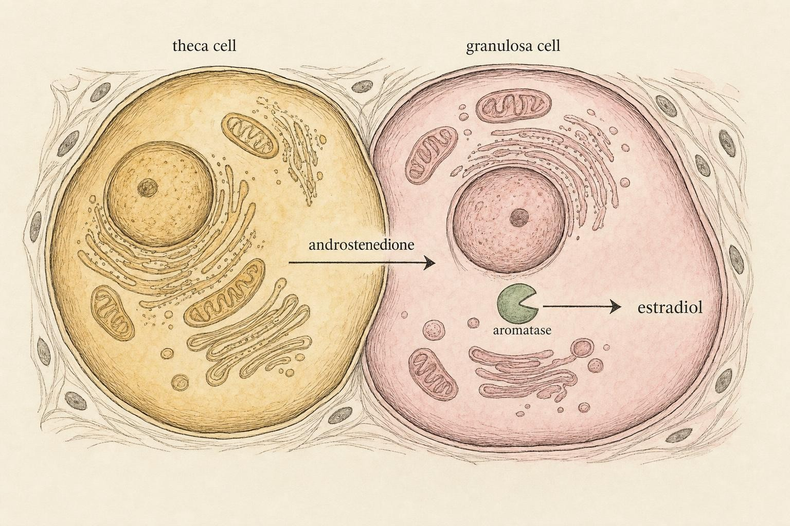

The Conversation Between Brain and Ovary
How a pulse becomes a message, and why the message sometimes reverses itself.
Imagine two people trying to coordinate over a walkie-talkie where the only tool they have is a button. They cannot speak. They can only press. And yet, over time, they work out a code: rapid taps mean one thing, long slow presses mean another. Neither of them ever says a word, but a rich conversation happens anyway, carried entirely in the rhythm of the pressing.
This is, almost literally, how your brain talks to your ovaries. The hypothalamus does not send a paragraph. It sends a pulse, then another pulse, then another, and the spacing between those pulses is the language. Get fluent in that language and most of what follows in this course, ovulation, contraception, the copper intrauterine device, missed periods in athletes, stops being a list of facts to memorize and becomes a system you can reason about.
Priya is 24, three months off a combined oral contraceptive she had taken since she was 17, and mildly annoyed. A routine visit for an unrelated concern turned into a fertility panel, mostly because her clinician wanted a baseline while she was between methods, not because anything was wrong. The results came back with two numbers she had never thought about before: an follicle-stimulating hormone value and a luteinizing hormone value, plus an estradiol reading, all drawn on a specific day of her cycle. A friend who had recently gone through a round of fertility treatment took one look and said, ominously, "you want your follicle-stimulating hormone low." Priya did not know whether her number was low, and she did not know why low would even be good. She is not a patient in this course and she is not a case to be diagnosed. She is a stand-in for a question nearly everyone eventually asks once they see their own labs: what do these two hormones actually mean, and why does the same test look completely different depending on which day it was drawn? By the end of this chapter, you will be able to answer that question for yourself, in general terms, the way an informed reader of a lab report should be able to, without ever needing to play doctor for Priya or for anyone else.
The one idea to carry out of this chapter
Before the anatomy, here is the frame that pays off everywhere else. The reproductive control system, formally the hypothalamic-pituitary-gonadal (HPG) axis, is a two-way conversation, not a chain of command. The brain speaks to the ovary, and the ovary speaks back. What the ovary says changes what the brain does next. When a colleague tells you that a hormone is "high" or "low," your first instinct after this chapter should be to ask: high relative to what, and what is that level telling the layer above it to do next?
Three practical consequences follow, and they are worth stating up front:
First, a single hormone can mean opposite things at different moments. Estradiol usually tells the brain to hold back. For a brief window each cycle, the same estradiol tells the brain to let go completely. Same molecule, opposite instruction.
Second, the messenger and the message are not the same. The hypothalamus does not change which hormone it releases to signal a new phase. It changes the rhythm of release. Timing carries meaning that concentration alone cannot.
Third, when people say a cycle "stopped," what usually stopped is this conversation, most often at the top. That distinction is the entire basis of the one recognize-and-refer thread we return to at the end: amenorrhea and relative energy deficiency in sport.
There is a fourth consequence, and it is the one Priya's story is built around. A hormone level only means something in the context of when it was measured and what the rest of the axis was doing at that moment. A follicle-stimulating hormone value drawn on day three of the cycle is answering a different question than the same test drawn on day twenty-one. Learn the conversation, and a lab report stops being a mysterious verdict and starts being one snapshot of a system in motion.

The axis drawn as dialogue: signals descend, and answers rise back." data-image-idx="0" style="display:block;max-width:100%;max-height:75vh;height:auto;width:auto;margin:0 auto;cursor:pointer;">Top of the axis: the hypothalamus and its pulses
At the top sits the hypothalamus, a region at the base of the brain roughly the size of an almond that nonetheless runs an enormous share of the body's regulatory business: temperature, hunger, thirst, and, central to this course, reproduction. A small population of neurons there, numbering only in the low thousands, releases gonadotropin-releasing hormone (GnRH), a short chain of ten amino acids, into a private set of blood vessels called the hypophyseal portal system. This local plumbing carries GnRH a very short distance, across millimeters rather than the body-wide loop most hormones travel, directly to the pituitary gland below. That is the whole job of GnRH: travel a few millimeters and instruct the pituitary. Because the delivery is so local, very little GnRH ever reaches the general bloodstream, which is why you cannot simply draw a blood sample from a vein in the arm and read the brain's instructions directly. The conversation at the very top of the axis is almost entirely private.
The crucial and often-skipped detail is that GnRH is never released as a steady drip. It comes out in discrete bursts, roughly once every thirty minutes to once every few hours depending on the moment (Plant, 2015). This pulsatility is not an accident of biology; it is essential. If you deliver GnRH continuously rather than in pulses, the pituitary actually stops responding within a matter of days, a phenomenon called desensitization. The rhythm is the signal, not merely a delivery detail of it.
What generates the rhythm? For decades this was a genuine mystery, one that reproductive physiologists chased for the better part of half a century. The current answer, and one of the more satisfying discoveries in modern reproductive biology, is a cluster of neurons in a part of the hypothalamus called the arcuate nucleus, known as the infundibular nucleus in humans. These cells are nicknamed KNDy neurons after the three signalling molecules they contain: kisspeptin, neurokinin B, and dynorphin. Neurokinin B acts like an accelerator that triggers each burst of kisspeptin, and dynorphin acts like a brake that shuts it off shortly after, so the small network of neurons oscillates on its own, firing in near-synchrony and then falling briefly silent before firing again. According to Herbison (2018), decades of recordings that were originally interpreted as arcuate nucleus electrical activity in general were, in hindsight, very likely recordings of this specific kisspeptin population doing exactly this rhythmic work. Each wave of kisspeptin then drives a pulse of GnRH into the portal vessels. In other words, kisspeptin neurons are the metronome, and GnRH is the note played on each beat.
Why does this matter to you in practice? Because the metronome's tempo is adjustable, and almost everything that influences the cycle, energy availability, stress, sex hormones themselves, exerts its effect by speeding up or slowing down these pulses rather than by acting on the ovary directly. When we discuss missed periods later, the failure point is usually here, at the tempo, not at the ovary itself.
The pituitary's reply: two gonadotropins
The pituitary listens to the incoming rhythm and answers by secreting two hormones into the general bloodstream, collectively called gonadotropins because they act on the gonads. They are follicle-stimulating hormone (FSH) and luteinizing hormone (LH). Both are made by the same cell type in the pituitary, the gonadotrope, and remarkably both are produced in response to the very same gonadotropin-releasing hormone. Structurally, follicle-stimulating hormone and luteinizing hormone are glycoprotein hormones built from two protein chains: an alpha subunit that is identical across several pituitary hormones, and a beta subunit unique to each one, which is what gives follicle-stimulating hormone and luteinizing hormone their distinct identities when they reach a receptor. So how does one input molecule, arriving at one cell, produce two different outputs in different amounts at different times?
The answer is tempo again. Fast pulses and slow pulses activate different chemical cascades inside the gonadotrope, and those cascades switch on the alpha and beta subunit genes to different degrees. As a clean rule of thumb from clinical and laboratory work: fast gonadotropin-releasing hormone pulses, faster than about one per hour, favor luteinizing hormone, while slow pulses, roughly one every two to three hours, favor follicle-stimulating hormone (Koysombat et al., 2023). This is the mechanism that lets one hypothalamus, releasing one hormone, drive genuinely different phases of the cycle. Early in the cycle, when the tempo runs slower, the pituitary leans toward follicle-stimulating hormone and follicles begin to grow. As the tempo quickens, the balance tips toward luteinizing hormone.
Once released, follicle-stimulating hormone and luteinizing hormone travel through the general bloodstream to the ovary, where each binds its own receptor, a protein embedded in the cell membrane that recognizes only its matching hormone, somewhat like a lock that only one key fits. The follicle-stimulating hormone receptor sits mainly on the granulosa cells that line the inside of a growing follicle. The luteinizing hormone receptor sits mainly on the theca cells that form the outer layer of that same follicle, and, as you will see shortly, it later appears on granulosa cells too, once the follicle has matured enough. This division of receptor location across two cell types inside a single follicle is the physical basis for nearly everything the ovary does with these two signals, and it is the reason the next section exists.
Hold on to a distinction here that the popular telling usually blurs. The gonadotropins are the pituitary's reply, not its independent decision. If you see follicle-stimulating hormone running high, the more useful question is not "the pituitary is doing something" but "what pattern of pulses, and what feedback from the ovary, is producing this reply?"
Fertility literacy: what follicle-stimulating hormone and luteinizing hormone actually tell you
This is the section Priya's lab report is really asking about, and it is worth pausing the mechanism to build the reading skill directly, because a surprising number of otherwise well-informed people never get taught it. A follicle-stimulating hormone or luteinizing hormone value on a lab report is not a fixed trait like blood type. It is a snapshot of a moving system, and the single most important piece of context for reading either number is which day of the cycle it was drawn on.
Clinically, follicle-stimulating hormone is often measured early, around day two to day four of the cycle, precisely because this is the point where the ovary's feedback is at its quietest and the pituitary's baseline output is easiest to read without the noise of a maturing follicle's hormones layered on top (Reed & Carr, 2018). A day-three follicle-stimulating hormone reading that sits within the expected range for that point in the cycle is one piece of evidence, among several a clinician would weigh, that the feedback loop between ovary and brain is behaving as expected for that stage of reproductive life. A markedly elevated day-three follicle-stimulating hormone can reflect the ovary sending a quieter answer than usual, which leaves the pituitary less restrained and therefore louder, though many other explanations exist and only a clinician interpreting the full picture, alongside other markers and the person's history, can say what a specific elevated number means for a specific person. Nothing about a single number, on its own, in a paragraph you read online, tells you a diagnosis.
Luteinizing hormone is read differently depending on the question being asked. A single luteinizing hormone value drawn at a random point mostly reflects wherever the pulse tempo happens to be that day. But a rapid rise in luteinizing hormone, tracked over consecutive days, is the basis of ovulation predictor kits, which detect the sharp climb that precedes ovulation by roughly a day. That is a genuinely different use of the same hormone: not a single snapshot compared against a population range, but a personal rise compared against a personal baseline, tracked across a handful of days. The two uses, a single day-three value and a multi-day rise, are answering different questions with the same molecule, and confusing them is one of the most common ways people misread their own results or a friend's.
There is one more piece of vocabulary worth having, because you will see it in Priya's world of fertility conversations even though it sits outside this chapter's core focus: the ratio between luteinizing hormone and follicle-stimulating hormone. In some contexts a luteinizing hormone value that runs noticeably higher than the follicle-stimulating hormone value at the same early-cycle draw is discussed as one supporting piece of evidence among several used in evaluating certain ovarian conditions. It is one data point in a larger clinical picture, never a standalone verdict, and building the habit of treating any single ratio or number that way is exactly the discipline this course is trying to instill.
What this section is for, then, is not teaching you to interpret your own labs instead of a clinician. It is teaching you to be a better-informed patient and a better-informed reader of the health information you encounter, so that a number on a page reads as one data point inside a system you understand, drawn on a specific day, answering a specific question, rather than as a verdict handed down from a mysterious authority. Priya's friend was not entirely wrong that context matters. She was wrong to treat a single word, low, as though it meant the same thing on every day of the cycle and for every person.
The ovary answers back: estradiol, estrone, and progesterone
Now the signal reaches its destination. Follicle-stimulating hormone and luteinizing hormone travel through the bloodstream to the ovary, and the ovary answers with the three sex hormones we will track for the rest of the course. Two of them are estrogens, meaning members of the same chemical family, and one is a progestogen.
Estradiol, the lead voice
Estradiol (E2) is the most potent estrogen and the dominant one during the reproductive years. It is produced by the growing follicle through an elegant division of labor known as the two-cell, two-gonadotropin model. Luteinizing hormone acts on the theca cells of the follicle, prompting them to make androgens, specifically androstenedione, a weaker steroid hormone that serves mainly as a stepping stone here rather than as an end product. Follicle-stimulating hormone acts on the neighboring granulosa cells, switching on an enzyme called aromatase that converts those androgens into estradiol. Neither cell can make estradiol alone. It takes both gonadotropins, acting on two different cells, cooperating (Reed & Carr, 2018). This is why estradiol rises as a follicle matures: it is a direct readout of a follicle growing under the two hormones the pituitary has been sending. As a follicle enlarges over the course of roughly the first half of the cycle, granulosa cells also begin to grow their own luteinizing hormone receptors, a change induced by sustained follicle-stimulating hormone exposure, which primes that follicle for the next phase of the story, ovulation and beyond.
Estrone, the weaker sibling
Estrone (E1) is a second, weaker estrogen, produced both by the follicle and by the conversion of androstenedione in peripheral tissues such as fat, outside the ovary entirely. During the reproductive years it lives somewhat in estradiol's shadow, contributing a smaller share of total estrogenic signal, but it becomes more prominent after menopause, when the ovaries wind down and much of the body's estrogen is produced in fat and other tissues rather than in a growing follicle. We name it now because it will matter a great deal in the later chapters on perimenopause and beyond. For now, file it as: same family as estradiol, weaker, and destined to take center stage later in life.
Progesterone, the after-hours hormone
Progesterone enters the story only after ovulation. When the follicle releases its egg, the structure left behind, the corpus luteum, retools itself and begins producing progesterone in quantity. Progesterone prepares the uterine lining to support a pregnancy, and it also feeds back to the brain, where its main effect is to slow the pulse tempo. That slowing is exactly why the second half of the cycle behaves so differently from the first. If no pregnancy occurs, the corpus luteum breaks down, progesterone falls, and the withdrawal of progesterone is what triggers the menstrual period.

Two cells, two gonadotropins, one estradiol: neither cell can finish the job alone." data-image-idx="1" style="display:block;max-width:100%;max-height:75vh;height:auto;width:auto;margin:0 auto;cursor:pointer;">Feedback: the reply that changes the question
Here is where the system becomes a conversation rather than a broadcast. The hormones the ovary makes travel back up to the brain and pituitary and change how much gonadotropin gets released next. This is feedback, and it comes in two flavors.
Negative feedback is the familiar, thermostat-like kind. When estradiol rises to a moderate level, it restrains the system: it dampens gonadotropin-releasing hormone pulses at the arcuate KNDy neurons and reins in luteinizing hormone. Progesterone, present after ovulation, does something similar to the tempo, slowing pulses further. For most of the cycle this is the mode the system runs in, and it keeps things stable. A moderate rise in estradiol says to the brain, "we have enough going on, ease off."
If negative feedback were the whole story, though, the system could never release an egg. Restraint alone would keep luteinizing hormone permanently modest, and ovulation requires the opposite: a sudden, enormous burst of luteinizing hormone, several times its baseline level. So the system needs a way to break its own rule at exactly the right moment. That is positive feedback, and it is the single most counterintuitive feature of the entire axis.
The switch nobody warns you about
Positive feedback is what happens when estradiol stays high for long enough. In the late part of the follicular phase, the dominant follicle pours out estradiol, and if that high level is sustained, roughly a day or more, the brain's interpretation flips. Instead of restraining luteinizing hormone, high estradiol now provokes it. The result is a massive surge of gonadotropin-releasing hormone, which drives a matching surge of luteinizing hormone, and that surge is what actually triggers ovulation, roughly a day and a half later (Christian & Moenter, 2010; Kauffman, 2022).
The elegance is in how the switch is built. Recall the two roles of kisspeptin. It turns out there are two anatomically separate populations of kisspeptin neurons doing two different jobs. The arcuate KNDy neurons handle the ordinary, tonic pulses that mediate negative feedback. A second group, in a region called the rostral periventricular area of the third ventricle, mediates the positive feedback surge. Sustained high estradiol activates this second population, and progesterone receptors expressed on these same neurons appear to help sharpen the timing of that activation, and they fire the starting gun for the surge (Kauffman, 2022; Stevenson et al., 2022). So the reason the same hormone can mean "hold back" and then "let go" is that it is being read by two different circuits, tuned to respond differently to how long the estradiol has been elevated.
Naming this switch now is one of the highest-value moves in the course. It is the reason ovulation happens on a schedule. It is what most hormonal contraception is designed to prevent, by keeping estradiol and progesterone in a pattern that never lets the surge fire. And its absence is one of the fingerprints of a cycle that has gone quiet. Every one of those topics gets easier once you can picture this one moment of reversal.
Tracing a ripple through the system
You now have every part. The payoff of thinking in a conversation is that you can trace a change at one level all the way through the others without memorizing outcomes. Walk one example slowly.
Suppose the pulse tempo at the top slows down markedly, which is what happens when the body senses too little available energy. Slower pulses tilt the pituitary's reply toward follicle-stimulating hormone and away from luteinizing hormone, but if the pulses slow far enough, both gonadotropins drop. With less gonadotropin reaching the ovary, follicles do not mature, so estradiol stays low. Low estradiol never reaches the sustained high level needed to trigger the surge, so no luteinizing hormone surge fires, so no ovulation occurs, so no corpus luteum forms, so progesterone never rises, so there is no progesterone withdrawal, so there is no period. One change at the top, the tempo, has rippled through five downstream steps to a silent cycle. Nothing in that chain required memorization once you understood the conversation.
Now run the ripple in the other direction, because it clarifies why a lab value alone can mislead. Suppose someone's follicle-stimulating hormone happens to be measured on a day when a follicle has just begun a fast growth spurt, sending estradiol climbing earlier than usual that cycle. The rising estradiol will, for a short window, dampen follicle-stimulating hormone through ordinary negative feedback, even though nothing about that person's underlying ovarian reserve or fertility has changed at all. The number moved because the conversation moved, not because anything is wrong. This is precisely why a single value, taken out of its cycle-day context, tells you so little on its own, and why Priya's friend, well-meaning as she was, was reasoning from an incomplete model.
This is the reasoning skill the course is built to give you. When you later meet the copper intrauterine device, hormonal contraception, or a training study that claims the cycle changes performance, you will be able to ask, at each level, what is the signal here and what is the reply.
When the conversation goes quiet: recognize and refer
The tempo example above is not hypothetical. It is the mechanism behind functional hypothalamic amenorrhea, and it connects to a pattern you should learn to notice: relative energy deficiency in sport, often shortened in the literature to a condition of low energy availability with wide-ranging effects on health and function. When someone consistently takes in less energy than their training and daily life demand, the hypothalamus reads the shortage and slows the pulse generator to conserve. The cycle can become irregular or stop entirely.
Two boundaries deserve to be said plainly. First, this is educational content, and noticing is not diagnosing. A missed period, or several, has many possible causes, some benign, some not, and only a qualified clinician can sort them out. Amenorrhea, defined loosely as the absence of menstruation, warrants professional evaluation rather than a self-directed fix, and the same is true of anything involving contraception, fertility testing, or the postpartum period. Your role, and the aim of this thread, is to recognize that a persistently absent cycle in the context of heavy training and low intake is a meaningful signal, not something to push through, and to understand that it may point to a condition worth having assessed.
Second, the reason this matters beyond fertility is that the same low estradiol that quiets the cycle also affects bone and other systems. A silent cycle is not merely an inconvenience. It can be the visible edge of a broader energy problem. That is precisely why the recognize-and-refer instinct is worth building now, before you have all the downstream detail. You are learning to hear when the conversation has stopped, and to know that the right next step is a professional, not a protocol.
Grading the evidence honestly
A closing note in the spirit of intellectual honesty, because the rest of the course depends on it. The core architecture in this chapter, pulsatile gonadotropin-releasing hormone, the frequency code, the two gonadotropins, the two modes of estradiol feedback, is well established across decades of animal and human work (Plant, 2015; Mihm et al., 2011). You can build on it with confidence.
What is far less settled is the popular layer built on top of it: the growing market of cycle-based training and nutrition advice that prescribes specific workouts or macronutrients for specific cycle phases, and the parallel habit of treating a single fertility-panel number as a verdict rather than as a data point. Much of the phase-based training guidance rests on small studies, inconsistent methods, and findings that contradict one another. The underlying endocrinology is real; the confident phase-by-phase prescriptions, and the confident single-number pronouncements about fertility, often outrun the data. When you encounter such claims later, treat the physiology as your anchor and the prescriptions with measured skepticism. It is entirely reasonable to say that we do not yet know.
One more note of humility. This chapter distills a large research literature into a clean model, and clean models leave things out. The lived and clinical expertise of women and the clinicians who work with them adds texture that no diagram captures. Even the switch point for positive feedback, elegant as it is, still holds open mechanistic questions that active researchers are working to answer (Kauffman, 2022). Fluency in the system means knowing both what it explains and where its edges are.
The pattern of the pulses, not merely their presence, is the language the system speaks.
The organizing idea of this course
Key Takeaways
- Treat the hypothalamic-pituitary-gonadal (HPG) axis as a two-way conversation. The brain signals the ovary, the ovary answers, and the answer changes what the brain does next.
- Gonadotropin-releasing hormone (GnRH) is released in pulses, and the tempo carries the meaning. Slow pulses favor follicle-stimulating hormone (FSH); fast pulses favor luteinizing hormone (LH).
- The pituitary's two gonadotropins are a reply to that tempo and to ovarian feedback, not an independent decision, and each acts on its own receptor on a specific follicle cell type.
- Estradiol (E2) is the potent lead estrogen from the growing follicle; estrone (E1) is its weaker sibling that matters most after menopause; progesterone comes from the corpus luteum after ovulation and slows the pulse tempo.
- Estradiol usually restrains luteinizing hormone through negative feedback, but when it stays high long enough it flips to positive feedback and provokes the surge that triggers ovulation.
- A follicle-stimulating hormone or luteinizing hormone value only means something in the context of cycle day and the rest of the axis; a single number is a snapshot, never a standalone verdict.
- A persistently absent cycle in the setting of heavy training and low energy intake is a signal to recognize, not a problem to self-treat. Amenorrhea, fertility testing, contraception, and the postpartum period belong with a qualified clinician.
- The architecture in this chapter is solid; many phase-specific training and nutrition prescriptions, and many confident readings of a single lab value, built on top of it are not. Anchor to the physiology and stay skeptical of overconfident claims.
With the conversation between brain and ovary now in your ear, the next chapter walks the menstrual cycle in real time. We will lay the hormones you just met onto a calendar and watch the follicular phase, the surge, and the luteal phase unfold, so the abstract loops of this chapter become a story with a beginning, a turning point, and an end.
References
Christian, C. A., & Moenter, S. M. (2010). The neurobiology of preovulatory and estradiol-induced gonadotropin-releasing hormone surges. Endocrine Reviews, 31(4), 544-577. https://doi.org/10.1210/er.2009-0023
Herbison, A. E. (2018). The gonadotropin-releasing hormone pulse generator. Endocrinology, 159(11), 3723-3736. https://doi.org/10.1210/en.2018-00653
Kauffman, A. S. (2022). Neuroendocrine mechanisms underlying estrogen positive feedback and the LH surge. Frontiers in Neuroscience, 16, 953252. https://doi.org/10.3389/fnins.2022.953252
Koysombat, K., Abbara, A., & Dhillo, W. S. (2023). Assessing hypothalamic pituitary gonadal function in reproductive disorders. Clinical Science, 137(11), 863-879. https://doi.org/10.1042/cs20220146
Mihm, M., Gangooly, S., & Muttukrishna, S. (2011). The normal menstrual cycle in women. Animal Reproduction Science, 124(3-4), 229-236. https://doi.org/10.1016/j.anireprosci.2010.08.030
Plant, T. M. (2015). 60 years of neuroendocrinology: The hypothalamo-pituitary-gonadal axis. Journal of Endocrinology, 226(2), T41-T54. https://journals.bioscientifica.com/joe/article/226/2/T41
Reed, B. G., & Carr, B. R. (2018). The normal menstrual cycle and the control of ovulation. In K. R. Feingold et al. (Eds.), Endotext. MDText.com. https://www.ncbi.nlm.nih.gov/books/NBK279054/
Stevenson, H., Bartram, S., Charalambides, M. M., Murthy, S., Petitt, T., Pradeep, A., Vineall, O., Abaraonye, I., Lancaster, A., Koysombat, K., Patel, B., & Abbara, A. (2022). Kisspeptin-neuron control of LH pulsatility and ovulation. Frontiers in Endocrinology, 13, 951938. https://doi.org/10.3389/fendo.2022.951938